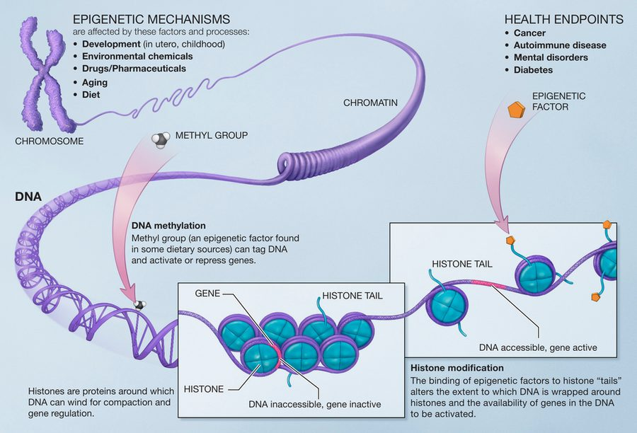

Preguntas frecuentes
Respuestas cortas y claras a las dudas más habituales sobre genética, herencia y pruebas genéticas.
 01
01¿Se hereda el cáncer?
Casi nunca. Solo entre un 5 y un 10 % de los cánceres se deben a una variante heredada. Cuándo sospecharlo y qué hacer.
Leer → 02
02¿Qué es ser portador de una enfermedad genética?
Tener una copia alterada de un gen sin tener la enfermedad. Todos somos portadores de algo; solo importa si tu pareja lo es de lo mismo.
Leer → 03
03¿Vale la pena un test de ancestría?
Puede ser divertido y encontrar parientes, pero sus porcentajes de origen son estimaciones, no son pruebas médicas fiables y entregas datos que afectan a toda tu familia.
Leer → 04
04¿Cubre la sanidad pública las pruebas genéticas?
Sí, cuando hay una indicación médica. En España las pruebas genéticas están en la cartera común del Sistema Nacional de Salud y se piden a través de los especialistas.
Leer → 05
05Si mi padre o mi madre tiene una enfermedad genética, ¿la tendré yo?
Depende del tipo de herencia, y casi nunca es seguro al cien por cien. Te explicamos cómo calcular el riesgo y cuándo hacerse la prueba.
Leer →
06¿Puedo cambiar mis genes con la dieta o el ejercicio?
Tu secuencia de ADN no cambia, pero sí cómo se usan los genes. Lo que la epigenética dice y lo que no.
Leer → 07
07¿Qué es una "variante de significado incierto"?
Un cambio en el ADN del que todavía no se sabe si causa enfermedad. No es un resultado positivo y no debe usarse para tomar decisiones médicas.
Leer → 08
08¿Por qué los hermanos no son iguales?
Porque cada hijo recibe una mezcla distinta de los genes de sus padres. Dos hermanos comparten de media la mitad de sus variantes.
Leer → 09
09¿Es peligroso tener hijos con un primo?
El riesgo de una enfermedad genética o malformación aumenta, pero menos de lo que se suele pensar: de un 2-3 % a un 4-6 % aproximadamente en primos hermanos.
Leer → 10
10¿Los gemelos tienen el mismo ADN?
Los gemelos idénticos tienen un ADN casi igual, pero no exactamente. Los mellizos se parecen genéticamente como cualquier par de hermanos.
Leer →